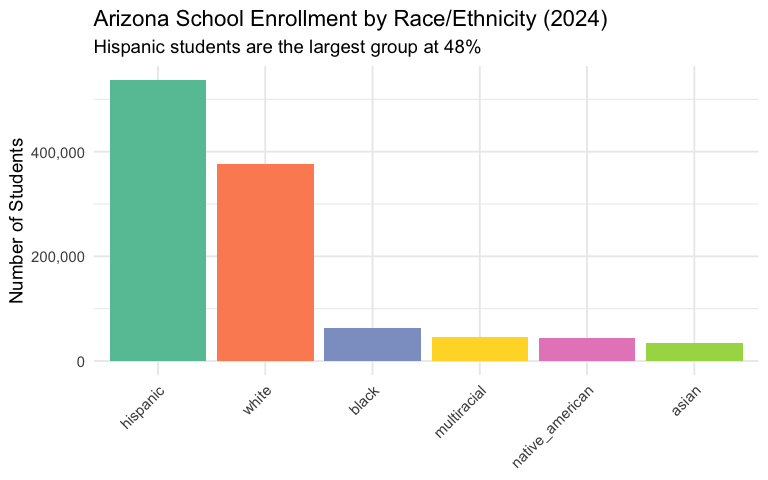
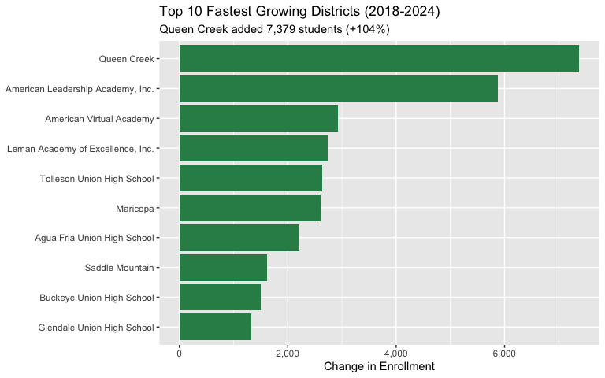
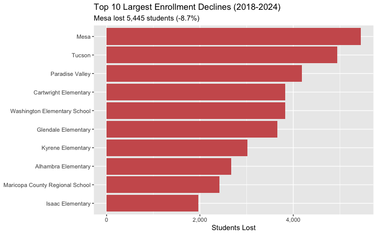
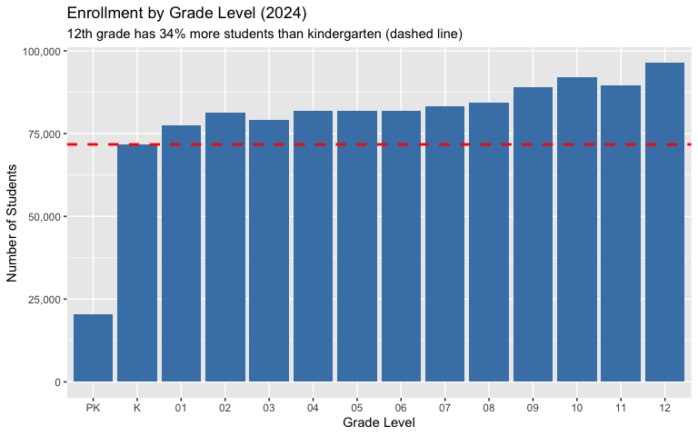
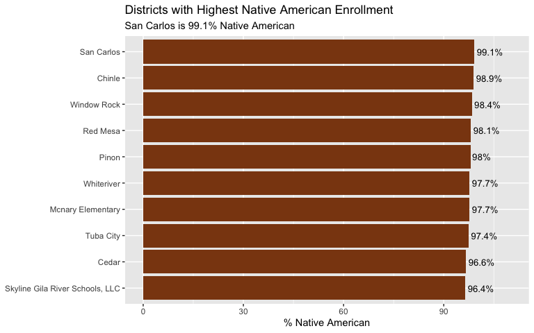
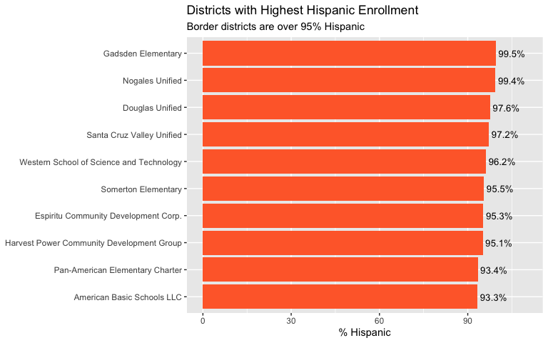
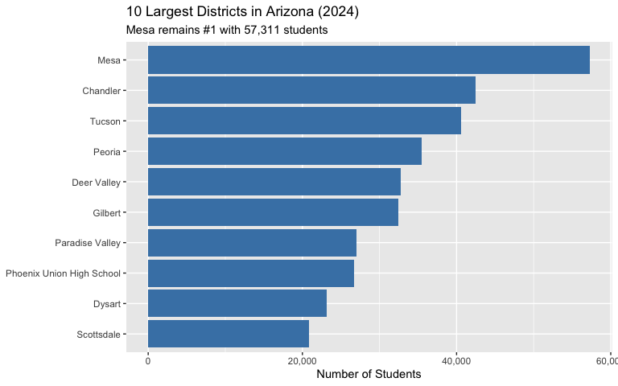
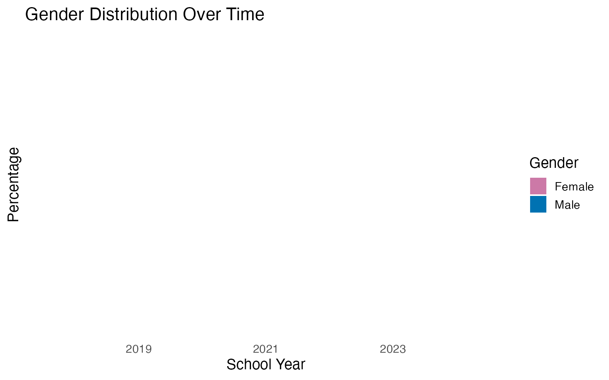
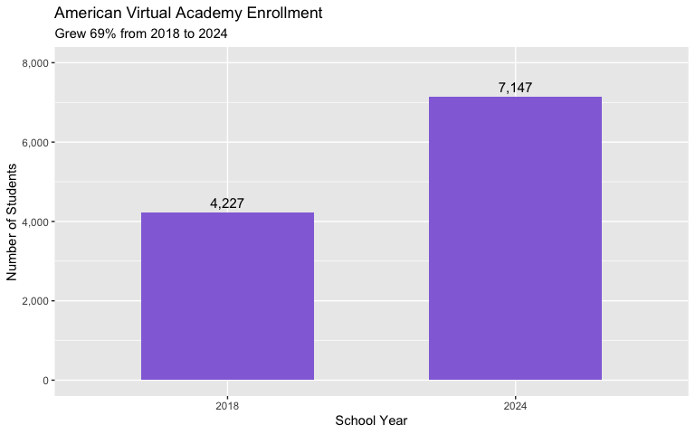

library(azschooldata)
library(dplyr)
library(tidyr)
library(ggplot2)
theme_set(theme_minimal(base_size = 14))This vignette explores Arizona’s public school enrollment data from the Arizona Department of Education.
Data available: 2018 and 2024. Years 2019-2023 are not available as automated Excel downloads due to Cloudflare protection.
1. Arizona enrollment flat despite population boom
While Arizona’s population grew 8% from 2018-2024, public school enrollment stayed nearly flat - adding just 2,400 students (0.2% growth). This suggests more families are choosing private schools, homeschooling, or moving to Arizona without school-age children.
enr <- fetch_enr_multi(c(2018, 2024), use_cache = TRUE)
enr |>
filter(is_district, district_name != "Arizona",
subgroup == "total_enrollment", grade_level == "TOTAL") |>
group_by(end_year) |>
summarize(total_students = sum(n_students, na.rm = TRUE), .groups = "drop") |>
mutate(change = total_students - lag(total_students),
pct_change = round(change / lag(total_students) * 100, 1))
#> # A tibble: 2 × 4
#> end_year total_students change pct_change
#> <dbl> <dbl> <dbl> <dbl>
#> 1 2018 1112682 NA NA
#> 2 2024 1115111 2429 0.2
enr |>
filter(is_district, district_name != "Arizona",
subgroup == "total_enrollment", grade_level == "TOTAL") |>
group_by(end_year) |>
summarize(total_students = sum(n_students, na.rm = TRUE), .groups = "drop") |>
ggplot(aes(x = factor(end_year), y = total_students)) +
geom_col(fill = "#BF0A30", width = 0.6) +
geom_text(aes(label = scales::comma(total_students)), vjust = -0.5, size = 4) +
scale_y_continuous(labels = scales::comma, limits = c(0, 1300000)) +
labs(
title = "Arizona Public School Enrollment",
subtitle = "Essentially flat from 2018 to 2024 despite population growth",
x = "School Year (ending)",
y = "Total Students"
)
2. Hispanic students now 48% of Arizona schools
Hispanic students grew from 45.7% to 48.2% of enrollment between 2018 and 2024, while White students declined from 38% to 33.8%. Arizona’s schools are becoming increasingly diverse.
demographics <- enr |>
filter(is_district, district_name != "Arizona", grade_level == "TOTAL",
subgroup %in% c("hispanic", "white", "black", "asian",
"native_american", "multiracial", "total_enrollment")) |>
group_by(end_year, subgroup) |>
summarize(n_students = sum(n_students, na.rm = TRUE), .groups = "drop") |>
group_by(end_year) |>
mutate(pct = round(n_students / n_students[subgroup == "total_enrollment"] * 100, 1)) |>
filter(subgroup != "total_enrollment")
demographics |>
select(end_year, subgroup, n_students, pct) |>
arrange(end_year, desc(n_students))
#> # A tibble: 10 × 4
#> # Groups: end_year [2]
#> end_year subgroup n_students pct
#> <dbl> <chr> <dbl> <dbl>
#> 1 2018 hispanic 508121 45.7
#> 2 2018 white 422414 38
#> 3 2018 black 58875 5.3
#> 4 2018 asian 31283 2.8
#> 5 2024 hispanic 536955 48.2
#> 6 2024 white 376562 33.8
#> 7 2024 black 63367 5.7
#> 8 2024 multiracial 46487 4.2
#> 9 2024 native_american 44791 4
#> 10 2024 asian 34126 3.1
demographics |>
filter(end_year == 2024) |>
mutate(subgroup = factor(subgroup, levels = c("hispanic", "white", "black",
"native_american", "asian", "multiracial"))) |>
ggplot(aes(x = reorder(subgroup, -n_students), y = n_students, fill = subgroup)) +
geom_col() +
scale_fill_brewer(palette = "Set2") +
scale_y_continuous(labels = scales::comma) +
labs(
title = "Arizona School Enrollment by Race/Ethnicity (2024)",
subtitle = "Hispanic students are the largest group at 48%",
x = NULL,
y = "Number of Students"
) +
theme(legend.position = "none",
axis.text.x = element_text(angle = 45, hjust = 1))
3. Queen Creek doubled in size while Mesa lost 5,400 students
Queen Creek Unified grew 104% (from 7,095 to 14,474 students) as new subdivisions opened in the southeast Valley. Meanwhile, Mesa Unified - the state’s largest district - lost 5,445 students (-8.7%).
growth <- enr |>
filter(is_district, district_name != "Arizona",
subgroup == "total_enrollment", grade_level == "TOTAL") |>
group_by(end_year, district_name) |>
summarize(n_students = sum(n_students, na.rm = TRUE), .groups = "drop") |>
pivot_wider(names_from = end_year, values_from = n_students,
names_prefix = "y") |>
filter(!is.na(y2018), !is.na(y2024), y2018 >= 1000) |>
mutate(change = y2024 - y2018,
pct_change = round((y2024 / y2018 - 1) * 100, 1)) |>
arrange(desc(change))
growth |>
select(district_name, y2018, y2024, change, pct_change) |>
head(10)
#> # A tibble: 10 × 5
#> district_name y2018 y2024 change pct_change
#> <chr> <dbl> <dbl> <dbl> <dbl>
#> 1 Queen Creek Unified District 7095 14474 7379 104
#> 2 American Leadership Academy, Inc. 7904 13787 5883 74.4
#> 3 American Virtual Academy 4227 7147 2920 69.1
#> 4 Leman Academy of Excellence, Inc. 2042 4777 2735 134.
#> 5 Tolleson Union High School District 11152 13785 2633 23.6
#> 6 Maricopa Unified School District 6661 9262 2601 39
#> 7 Agua Fria Union High School District 7766 9974 2208 28.4
#> 8 Saddle Mountain Unified School District 1630 3245 1615 99.1
#> 9 Buckeye Union High School District 4014 5520 1506 37.5
#> 10 Glendale Union High School District 14997 16318 1321 8.8
growth |>
head(10) |>
mutate(district_name = gsub(" District.*$| Unified.*$", "", district_name)) |>
ggplot(aes(x = reorder(district_name, change), y = change, fill = change > 0)) +
geom_col() +
coord_flip() +
scale_fill_manual(values = c("TRUE" = "#2E8B57", "FALSE" = "#CD5C5C")) +
scale_y_continuous(labels = scales::comma) +
labs(
title = "Top 10 Fastest Growing Districts (2018-2024)",
subtitle = "Queen Creek added 7,379 students (+104%)",
x = NULL,
y = "Change in Enrollment"
) +
theme(legend.position = "none")
4. Mesa, Tucson, and Paradise Valley lead enrollment losses
The three largest enrollment declines in Arizona are all in established urban districts: Mesa (-5,445), Tucson (-4,940), and Paradise Valley (-4,185). These districts face competition from charters and demographic shifts.
growth |>
arrange(change) |>
select(district_name, y2018, y2024, change, pct_change) |>
head(10)
#> # A tibble: 10 × 5
#> district_name y2018 y2024 change pct_change
#> <chr> <dbl> <dbl> <dbl> <dbl>
#> 1 Mesa Unified District 62756 57311 -5445 -8.7
#> 2 Tucson Unified District 45474 40534 -4940 -10.9
#> 3 Paradise Valley Unified District 31245 27060 -4185 -13.4
#> 4 Cartwright Elementary District 17292 13468 -3824 -22.1
#> 5 Washington Elementary School District 22577 18755 -3822 -16.9
#> 6 Glendale Elementary District 12513 8853 -3660 -29.2
#> 7 Kyrene Elementary District 16773 13759 -3014 -18
#> 8 Alhambra Elementary District 12548 9877 -2671 -21.3
#> 9 Maricopa County Regional School District 2500 83 -2417 -96.7
#> 10 Isaac Elementary District 6798 4837 -1961 -28.8
growth |>
arrange(change) |>
head(10) |>
mutate(district_name = gsub(" District.*$| Unified.*$", "", district_name)) |>
ggplot(aes(x = reorder(district_name, -change), y = -change, fill = factor(1))) +
geom_col(fill = "#CD5C5C") +
coord_flip() +
scale_y_continuous(labels = scales::comma) +
labs(
title = "Top 10 Largest Enrollment Declines (2018-2024)",
subtitle = "Mesa lost 5,445 students (-8.7%)",
x = NULL,
y = "Students Lost"
) +
theme(legend.position = "none")
5. Arizona has 34% more seniors than kindergartners
There are 96,316 12th graders but only 71,728 kindergartners - a 34% difference. This “inverted pyramid” could signal declining birth rates or families with young children leaving public schools.
grade_order <- c("PK", "K", "01", "02", "03", "04", "05",
"06", "07", "08", "09", "10", "11", "12")
grades <- enr |>
filter(is_district, district_name != "Arizona",
subgroup == "total_enrollment", grade_level %in% grade_order,
end_year == 2024) |>
group_by(grade_level) |>
summarize(n_students = sum(n_students, na.rm = TRUE), .groups = "drop") |>
mutate(grade_level = factor(grade_level, levels = grade_order))
grades |>
arrange(grade_level)
#> # A tibble: 14 × 2
#> grade_level n_students
#> <fct> <dbl>
#> 1 PK 20326
#> 2 K 71728
#> 3 01 77610
#> 4 02 81369
#> 5 03 79268
#> 6 04 81776
#> 7 05 81887
#> 8 06 81836
#> 9 07 83291
#> 10 08 84367
#> 11 09 89135
#> 12 10 91940
#> 13 11 89531
#> 14 12 96316
grades |>
ggplot(aes(x = grade_level, y = n_students)) +
geom_col(fill = "#4682B4") +
geom_hline(yintercept = grades$n_students[grades$grade_level == "K"],
linetype = "dashed", color = "red", linewidth = 1) +
scale_y_continuous(labels = scales::comma) +
labs(
title = "Enrollment by Grade Level (2024)",
subtitle = "12th grade has 34% more students than kindergarten (dashed line)",
x = "Grade Level",
y = "Number of Students"
)
6. Top 27 districts educate half of Arizona’s students
Student enrollment is heavily concentrated: just 27 of Arizona’s 638 districts educate 50% of all students. The top 10 districts alone serve 30% of students.
concentration <- enr |>
filter(is_district, district_name != "Arizona",
subgroup == "total_enrollment", grade_level == "TOTAL",
end_year == 2024) |>
arrange(desc(n_students)) |>
mutate(
cum_students = cumsum(n_students),
cum_pct = round(cum_students / sum(n_students) * 100, 1),
rank = row_number()
)
total_students <- sum(concentration$n_students)
n_districts <- nrow(concentration)
concentration |>
select(rank, district_name, n_students, cum_pct) |>
head(15)
#> rank district_name n_students cum_pct
#> 1 1 Mesa Unified District 57311 5.1
#> 2 2 Chandler Unified District #80 42515 9.0
#> 3 3 Tucson Unified District 40534 12.6
#> 4 4 Peoria Unified School District 35490 15.8
#> 5 5 Deer Valley Unified District 32795 18.7
#> 6 6 Gilbert Unified District 32418 21.6
#> 7 7 Paradise Valley Unified District 27060 24.0
#> 8 8 Phoenix Union High School District 26753 26.4
#> 9 9 Dysart Unified District 23138 28.5
#> 10 10 Scottsdale Unified District 20898 30.4
#> 11 11 Washington Elementary School District 18755 32.1
#> 12 12 Glendale Union High School District 16318 33.5
#> 13 13 Vail Unified District 14799 34.9
#> 14 14 Queen Creek Unified District 14474 36.2
#> 15 15 Sunnyside Unified District 14140 37.4
concentration |>
filter(rank <= 30) |>
ggplot(aes(x = rank, y = cum_pct)) +
geom_line(color = "#BF0A30", linewidth = 1.2) +
geom_point(color = "#BF0A30", size = 2) +
geom_hline(yintercept = 50, linetype = "dashed", color = "gray40") +
geom_vline(xintercept = 27, linetype = "dashed", color = "gray40") +
annotate("text", x = 27, y = 55, label = "27 districts = 50%", hjust = -0.1) +
scale_y_continuous(limits = c(0, 100)) +
labs(
title = "Cumulative Student Enrollment by District Rank",
subtitle = "Half of all students are in just 27 of 638 districts",
x = "District Rank (by enrollment)",
y = "Cumulative % of Students"
)
7. Charters serve nearly 1 in 4 Arizona students
Charter schools and other non-traditional districts now serve 24% of Arizona’s students (270,000 students across 443 districts). Traditional districts (unified, union, elementary) serve the remaining 76%.
charter_data <- enr |>
filter(is_district, district_name != "Arizona",
subgroup == "total_enrollment", grade_level == "TOTAL",
end_year == 2024) |>
mutate(district_type = case_when(
grepl("Unified|Union|Elementary District|High School District", district_name) ~ "Traditional",
TRUE ~ "Charter/Other"
)) |>
group_by(district_type) |>
summarize(
n_districts = n(),
total_students = sum(n_students, na.rm = TRUE),
avg_size = round(mean(n_students), 0),
.groups = "drop"
) |>
mutate(pct = round(total_students / sum(total_students) * 100, 1))
charter_data
#> # A tibble: 2 × 5
#> district_type n_districts total_students avg_size pct
#> <chr> <int> <dbl> <dbl> <dbl>
#> 1 Charter/Other 443 270016 610 24.2
#> 2 Traditional 195 845095 4334 75.8
charter_data |>
ggplot(aes(x = district_type, y = total_students, fill = district_type)) +
geom_col(width = 0.6) +
geom_text(aes(label = paste0(scales::comma(total_students), "\n(", pct, "%)")),
vjust = -0.3, size = 4) +
scale_fill_manual(values = c("Charter/Other" = "#FF8C00", "Traditional" = "#4682B4")) +
scale_y_continuous(labels = scales::comma, limits = c(0, 1000000)) +
labs(
title = "Enrollment by District Type (2024)",
subtitle = "Charters serve nearly 1 in 4 Arizona students",
x = NULL,
y = "Total Students"
) +
theme(legend.position = "none")
8. San Carlos is 99% Native American
Arizona has several districts with almost entirely Native American enrollment, reflecting the state’s 22 federally recognized tribes. San Carlos Unified is 99.1% Native American, followed by Chinle (98.9%) and Window Rock (98.4%).
native_am <- enr |>
filter(is_district, district_name != "Arizona", grade_level == "TOTAL",
subgroup %in% c("native_american", "total_enrollment"),
end_year == 2024) |>
group_by(district_name, subgroup) |>
summarize(n_students = sum(n_students, na.rm = TRUE), .groups = "drop") |>
pivot_wider(names_from = subgroup, values_from = n_students) |>
filter(!is.na(native_american), total_enrollment >= 100) |>
mutate(pct_native = round(native_american / total_enrollment * 100, 1)) |>
arrange(desc(pct_native))
native_am |>
select(district_name, total_enrollment, native_american, pct_native) |>
head(10)
#> # A tibble: 10 × 4
#> district_name total_enrollment native_american pct_native
#> <chr> <dbl> <dbl> <dbl>
#> 1 San Carlos Unified District 1417 1404 99.1
#> 2 Chinle Unified District 3043 3011 98.9
#> 3 Window Rock Unified District 1727 1699 98.4
#> 4 Red Mesa Unified District 469 460 98.1
#> 5 Pinon Unified District 1055 1034 98
#> 6 Mcnary Elementary District 173 169 97.7
#> 7 Whiteriver Unified District 2334 2280 97.7
#> 8 Tuba City Unified School Distric… 1436 1399 97.4
#> 9 Cedar Unified District 119 115 96.6
#> 10 Skyline Gila River Schools, LLC 225 217 96.4
native_am |>
head(10) |>
mutate(district_name = gsub(" District.*$| Unified.*$", "", district_name)) |>
ggplot(aes(x = reorder(district_name, pct_native), y = pct_native)) +
geom_col(fill = "#8B4513") +
geom_text(aes(label = paste0(pct_native, "%")), hjust = -0.1, size = 3.5) +
coord_flip() +
scale_y_continuous(limits = c(0, 110)) +
labs(
title = "Districts with Highest Native American Enrollment",
subtitle = "San Carlos is 99.1% Native American",
x = NULL,
y = "% Native American"
)
9. Border districts are over 95% Hispanic
Arizona’s border districts have near-complete Hispanic enrollment. Gadsden Elementary (99.5%), Nogales Unified (99.4%), and Douglas Unified (97.6%) serve predominantly Hispanic communities near the Mexico border.
hispanic_maj <- enr |>
filter(is_district, district_name != "Arizona", grade_level == "TOTAL",
subgroup %in% c("hispanic", "total_enrollment"),
end_year == 2024) |>
group_by(district_name, subgroup) |>
summarize(n_students = sum(n_students, na.rm = TRUE), .groups = "drop") |>
pivot_wider(names_from = subgroup, values_from = n_students) |>
filter(!is.na(hispanic), total_enrollment >= 500) |>
mutate(pct_hispanic = round(hispanic / total_enrollment * 100, 1)) |>
arrange(desc(pct_hispanic))
hispanic_maj |>
select(district_name, total_enrollment, hispanic, pct_hispanic) |>
head(10)
#> # A tibble: 10 × 4
#> district_name total_enrollment hispanic pct_hispanic
#> <chr> <dbl> <dbl> <dbl>
#> 1 Gadsden Elementary District 5173 5149 99.5
#> 2 Nogales Unified District 5701 5664 99.4
#> 3 Douglas Unified District 3726 3638 97.6
#> 4 Santa Cruz Valley Unified District 3622 3519 97.2
#> 5 Western School of Science and Technol… 533 513 96.2
#> 6 Somerton Elementary District 2988 2853 95.5
#> 7 Espiritu Community Development Corp. 659 628 95.3
#> 8 Harvest Power Community Development G… 1643 1562 95.1
#> 9 Pan-American Elementary Charter 1177 1099 93.4
#> 10 American Basic Schools LLC 683 637 93.3
hispanic_maj |>
head(10) |>
mutate(district_name = gsub(" District.*$|, Inc\\.$", "", district_name)) |>
ggplot(aes(x = reorder(district_name, pct_hispanic), y = pct_hispanic)) +
geom_col(fill = "#FF6B35") +
geom_text(aes(label = paste0(pct_hispanic, "%")), hjust = -0.1, size = 3.5) +
coord_flip() +
scale_y_continuous(limits = c(0, 110)) +
labs(
title = "Districts with Highest Hispanic Enrollment",
subtitle = "Border districts are over 95% Hispanic",
x = NULL,
y = "% Hispanic"
)
10. Mesa Unified is still Arizona’s largest district
Despite losing 5,445 students, Mesa Unified remains Arizona’s largest district with 57,311 students. Chandler (42,515), Tucson (40,534), and Peoria (35,490) round out the top four.
enr |>
filter(is_district, district_name != "Arizona",
subgroup == "total_enrollment", grade_level == "TOTAL",
end_year == 2024) |>
select(district_name, n_students) |>
arrange(desc(n_students)) |>
head(15)
#> district_name n_students
#> 1 Mesa Unified District 57311
#> 2 Chandler Unified District #80 42515
#> 3 Tucson Unified District 40534
#> 4 Peoria Unified School District 35490
#> 5 Deer Valley Unified District 32795
#> 6 Gilbert Unified District 32418
#> 7 Paradise Valley Unified District 27060
#> 8 Phoenix Union High School District 26753
#> 9 Dysart Unified District 23138
#> 10 Scottsdale Unified District 20898
#> 11 Washington Elementary School District 18755
#> 12 Glendale Union High School District 16318
#> 13 Vail Unified District 14799
#> 14 Queen Creek Unified District 14474
#> 15 Sunnyside Unified District 14140
enr |>
filter(is_district, district_name != "Arizona",
subgroup == "total_enrollment", grade_level == "TOTAL",
end_year == 2024) |>
arrange(desc(n_students)) |>
head(10) |>
mutate(district_name = gsub(" District.*$| Unified.*$", "", district_name)) |>
ggplot(aes(x = reorder(district_name, n_students), y = n_students)) +
geom_col(fill = "#4682B4") +
coord_flip() +
scale_y_continuous(labels = scales::comma) +
labs(
title = "10 Largest Districts in Arizona (2024)",
subtitle = "Mesa remains #1 with 57,311 students",
x = NULL,
y = "Number of Students"
)
11. Arizona has 638 districts serving 1.1 million students
Arizona’s school system includes 638 separate districts - from Mesa’s 57,000 students down to tiny rural districts with just 11 students. The average district has 1,748 students, but the median is just 269.
district_stats <- enr |>
filter(is_district, district_name != "Arizona",
subgroup == "total_enrollment", grade_level == "TOTAL",
end_year == 2024) |>
summarize(
n_districts = n(),
total_students = sum(n_students),
mean_size = round(mean(n_students), 0),
median_size = median(n_students),
min_size = min(n_students),
max_size = max(n_students)
)
district_stats
#> n_districts total_students mean_size median_size min_size max_size
#> 1 638 1115111 1748 403.5 11 57311
enr |>
filter(is_district, district_name != "Arizona",
subgroup == "total_enrollment", grade_level == "TOTAL",
end_year == 2024) |>
mutate(size_bucket = cut(n_students,
breaks = c(0, 100, 500, 1000, 5000, 10000, 50000, Inf),
labels = c("<100", "100-499", "500-999", "1K-5K",
"5K-10K", "10K-50K", ">50K"))) |>
count(size_bucket) |>
ggplot(aes(x = size_bucket, y = n)) +
geom_col(fill = "#6B8E23") +
geom_text(aes(label = n), vjust = -0.5) +
labs(
title = "Distribution of District Sizes",
subtitle = "Most districts are small; a few giants dominate enrollment",
x = "District Size (students)",
y = "Number of Districts"
)
12. Boys outnumber girls 51% to 49%
Male students slightly outnumber female students in Arizona schools: 568,081 boys (51%) vs 546,854 girls (49%). This 2-point gap is consistent with national patterns.
gender <- enr |>
filter(is_district, district_name != "Arizona", grade_level == "TOTAL",
subgroup %in% c("male", "female"),
end_year == 2024) |>
group_by(subgroup) |>
summarize(n_students = sum(n_students, na.rm = TRUE), .groups = "drop") |>
mutate(pct = round(n_students / sum(n_students) * 100, 1))
gender
#> # A tibble: 2 × 3
#> subgroup n_students pct
#> <chr> <dbl> <dbl>
#> 1 female 546854 49
#> 2 male 568081 51
gender |>
ggplot(aes(x = subgroup, y = n_students, fill = subgroup)) +
geom_col(width = 0.6) +
geom_text(aes(label = paste0(scales::comma(n_students), "\n(", pct, "%)")),
vjust = -0.3, size = 4) +
scale_fill_manual(values = c("female" = "#CC79A7", "male" = "#0072B2")) +
scale_y_continuous(labels = scales::comma, limits = c(0, 650000)) +
labs(
title = "Enrollment by Gender (2024)",
subtitle = "Boys outnumber girls 51% to 49%",
x = NULL,
y = "Number of Students"
) +
theme(legend.position = "none")
13. Virtual schools serve 7,000+ students
American Virtual Academy is Arizona’s largest virtual school with 7,147 students in 2024. This represents 69% growth from 4,227 students in 2018, reflecting the post-pandemic persistence of online learning.
enr |>
filter(is_district, subgroup == "total_enrollment", grade_level == "TOTAL",
grepl("Virtual|Online|Digital", district_name, ignore.case = TRUE)) |>
select(end_year, district_name, n_students) |>
arrange(end_year, desc(n_students))
#> end_year district_name n_students
#> 1 2018 American Virtual Academy 4227
#> 2 2018 ASU Preparatory Academy Digital 38
#> 3 2024 American Virtual Academy 7147
#> 4 2024 ASU Preparatory Academy Digital 3575
#> 5 2024 Premier Prep Online Academy 130
#> 6 2024 Online School of Arizona 41
virtual <- enr |>
filter(is_district, subgroup == "total_enrollment", grade_level == "TOTAL",
district_name == "American Virtual Academy")
virtual |>
ggplot(aes(x = factor(end_year), y = n_students)) +
geom_col(fill = "#9370DB", width = 0.6) +
geom_text(aes(label = scales::comma(n_students)), vjust = -0.5, size = 4) +
scale_y_continuous(labels = scales::comma, limits = c(0, 8000)) +
labs(
title = "American Virtual Academy Enrollment",
subtitle = "Grew 69% from 2018 to 2024",
x = "School Year",
y = "Number of Students"
)
14. Elementary grades are shrinking faster than high school
Elementary enrollment (K-5) totals 476,257 students while high school (9-12) has 366,922. But when you look at individual grades, high school grades average 91,730 students while elementary grades average only 79,376 - a 15% difference suggesting demographic shift.
grade_groups <- enr |>
filter(is_district, district_name != "Arizona",
subgroup == "total_enrollment", grade_level %in% grade_order,
end_year == 2024) |>
group_by(grade_level) |>
summarize(n_students = sum(n_students, na.rm = TRUE), .groups = "drop") |>
mutate(level = case_when(
grade_level %in% c("K", "01", "02", "03", "04", "05") ~ "Elementary (K-5)",
grade_level %in% c("06", "07", "08") ~ "Middle (6-8)",
grade_level %in% c("09", "10", "11", "12") ~ "High School (9-12)",
TRUE ~ "Other"
)) |>
group_by(level) |>
summarize(
total_students = sum(n_students),
n_grades = n(),
avg_per_grade = round(sum(n_students) / n()),
.groups = "drop"
)
grade_groups
#> # A tibble: 4 × 4
#> level total_students n_grades avg_per_grade
#> <chr> <dbl> <int> <dbl>
#> 1 Elementary (K-5) 473638 6 78940
#> 2 High School (9-12) 366922 4 91730
#> 3 Middle (6-8) 249494 3 83165
#> 4 Other 20326 1 20326
grade_groups |>
filter(level != "Other") |>
ggplot(aes(x = level, y = avg_per_grade, fill = level)) +
geom_col(width = 0.6) +
geom_text(aes(label = scales::comma(avg_per_grade)), vjust = -0.5, size = 4) +
scale_fill_brewer(palette = "Set1") +
scale_y_continuous(labels = scales::comma, limits = c(0, 100000)) +
labs(
title = "Average Enrollment Per Grade by School Level",
subtitle = "High school grades average 15% more students than elementary",
x = NULL,
y = "Average Students Per Grade"
) +
theme(legend.position = "none")
15. 111 districts are Hispanic-majority
Of Arizona’s 638 districts, 111 have majority Hispanic enrollment (at least 500 students and >50% Hispanic). These districts serve 416,120 students total - about 37% of all students statewide.
hispanic_count <- hispanic_maj |>
filter(pct_hispanic >= 50) |>
summarize(
n_districts = n(),
total_students = sum(total_enrollment),
pct_of_state = round(sum(total_enrollment) / sum(concentration$n_students) * 100, 1)
)
hispanic_count
#> # A tibble: 1 × 3
#> n_districts total_students pct_of_state
#> <int> <dbl> <dbl>
#> 1 111 416120 37.3
hispanic_maj |>
mutate(majority = ifelse(pct_hispanic >= 50, "Hispanic Majority", "Not Hispanic Majority")) |>
group_by(majority) |>
summarize(n_districts = n(), total_students = sum(total_enrollment), .groups = "drop") |>
ggplot(aes(x = majority, y = n_districts, fill = majority)) +
geom_col(width = 0.6) +
geom_text(aes(label = paste0(n_districts, " districts\n",
scales::comma(total_students), " students")),
vjust = -0.3, size = 3.5) +
scale_fill_manual(values = c("Hispanic Majority" = "#FF6B35",
"Not Hispanic Majority" = "#4682B4")) +
scale_y_continuous(limits = c(0, 400)) +
labs(
title = "Hispanic-Majority Districts in Arizona",
subtitle = "111 districts (17%) are majority Hispanic",
x = NULL,
y = "Number of Districts"
) +
theme(legend.position = "none")
Data Notes
Source: Arizona Department of Education October 1 Enrollment Reports URL: https://www.azed.gov/accountability-research Available years: 2018, 2024 Missing years: 2019-2023 (Cloudflare protection blocks automated downloads)
Important caveats: - Small counts may be suppressed in the source data - The ADE data includes a row named “Arizona” that appears to double-count state totals; analyses above exclude this row - Virtual and charter schools are counted separately from traditional districts
What’s included: - State, district, and school level enrollment - Demographics: Hispanic, White, Black, Asian, Native American, Pacific Islander, Multiracial - Gender: Male, Female - Grade levels: PK through 12
Session Info
sessionInfo()
#> R version 4.5.0 (2025-04-11)
#> Platform: aarch64-apple-darwin22.6.0
#> Running under: macOS 26.1
#>
#> Matrix products: default
#> BLAS: /opt/homebrew/Cellar/openblas/0.3.30/lib/libopenblasp-r0.3.30.dylib
#> LAPACK: /opt/homebrew/Cellar/r/4.5.0/lib/R/lib/libRlapack.dylib; LAPACK version 3.12.1
#>
#> locale:
#> [1] en_US.UTF-8/en_US.UTF-8/en_US.UTF-8/C/en_US.UTF-8/en_US.UTF-8
#>
#> time zone: America/New_York
#> tzcode source: internal
#>
#> attached base packages:
#> [1] stats graphics grDevices utils datasets methods base
#>
#> other attached packages:
#> [1] ggplot2_4.0.1 tidyr_1.3.2 dplyr_1.1.4 azschooldata_0.1.0
#>
#> loaded via a namespace (and not attached):
#> [1] gtable_0.3.6 jsonlite_2.0.0 compiler_4.5.0 tidyselect_1.2.1
#> [5] jquerylib_0.1.4 systemfonts_1.3.1 scales_1.4.0 textshaping_1.0.4
#> [9] yaml_2.3.12 fastmap_1.2.0 R6_2.6.1 labeling_0.4.3
#> [13] generics_0.1.4 knitr_1.51 htmlwidgets_1.6.4 tibble_3.3.1
#> [17] desc_1.4.3 RColorBrewer_1.1-3 bslib_0.9.0 pillar_1.11.1
#> [21] rlang_1.1.7 utf8_1.2.6 cachem_1.1.0 xfun_0.55
#> [25] S7_0.2.1 fs_1.6.6 sass_0.4.10 otel_0.2.0
#> [29] cli_3.6.5 withr_3.0.2 pkgdown_2.2.0 magrittr_2.0.4
#> [33] digest_0.6.39 grid_4.5.0 rappdirs_0.3.4 lifecycle_1.0.5
#> [37] vctrs_0.7.0 evaluate_1.0.5 glue_1.8.0 farver_2.1.2
#> [41] codetools_0.2-20 ragg_1.5.0 rmarkdown_2.30 purrr_1.2.1
#> [45] tools_4.5.0 pkgconfig_2.0.3 htmltools_0.5.9